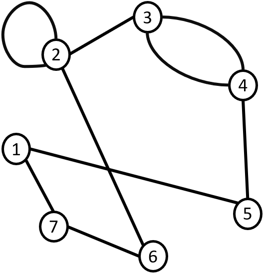
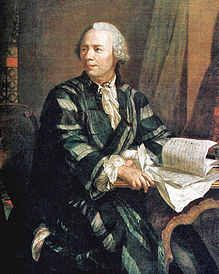
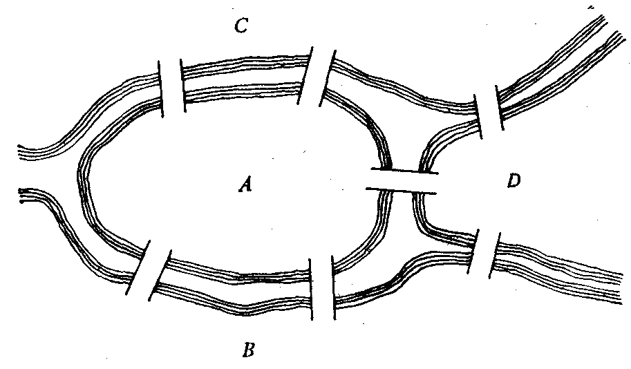

Главная |
|||||
| Главная | Основные понятия Виды графов |
Способы объявления | DFS | BFS | Доп.информация |
|
 Граф — это геометрическая фигура, которая состоит из точек и линий, которые их соединяют. Точки называют вершинами графа, а линии — ребрами. Графы находят широкое применение в современной науке и технике. Они используются и в естественных науках (физике и химии) и в социальных науках (например, социологии), но наибольших масштабов применение графов получило в информатике и сетевых технологиях. |
|||||
История возникнвения теории графовЛеонард Эйлер и задача о Кёнигсберских мостах Родоначальником теории графов считается Леонард Эйлер. В 1736 году в одном из своих писем он формулирует и предлагает решение задачи о семи кёнигсбергских мостах, ставшей впоследствии одной из классических задач теории графов. Издавна среди жителей Кёнигсберга (теперь Калининграда) была распространена такая загадка: как пройти по всем мостам, не проходя ни по одному из них дважды? Многие кёнигсбержцы пытались решить эту задачу как теоретически, так и практически, во время прогулок. Но никому это не удавалось, однако не удавалось и доказать, что это даже теоретически невозможно. В 1736 году задача о семи мостах заинтересовала выдающегося математика, члена Петербургской академии наук Леонарда Эйлера, о чём он написал в письме итальянскому математику и инженеру Мариони от 13 марта 1736 года. В этом письме Эйлер пишет о том, что он смог найти правило, пользуясь которым легко определить, можно ли пройти по всем мостам, не проходя дважды ни по одному из них (в случае семи мостов Кёнигсберга это невозможно).
 Для того, чтобы решить эту задачу, Эйлер сделал специальные обозначения. Каждую часть суши (остров или берег реки) он обозначил кружком на бумаге, а затем соединил линиями те кружки, между которыми существуют мосты. Такие обозначения подчеркивают, что в этой задаче фактическое расположение, форма, длина и другие свойства объектов не представляют интереса, важны только связи между ними. Такая картинка на бумаге или на экране компьютера называется графом. Кружки — это его вершины, а линии — рёбра. |
|||||